Fabric
MacTel
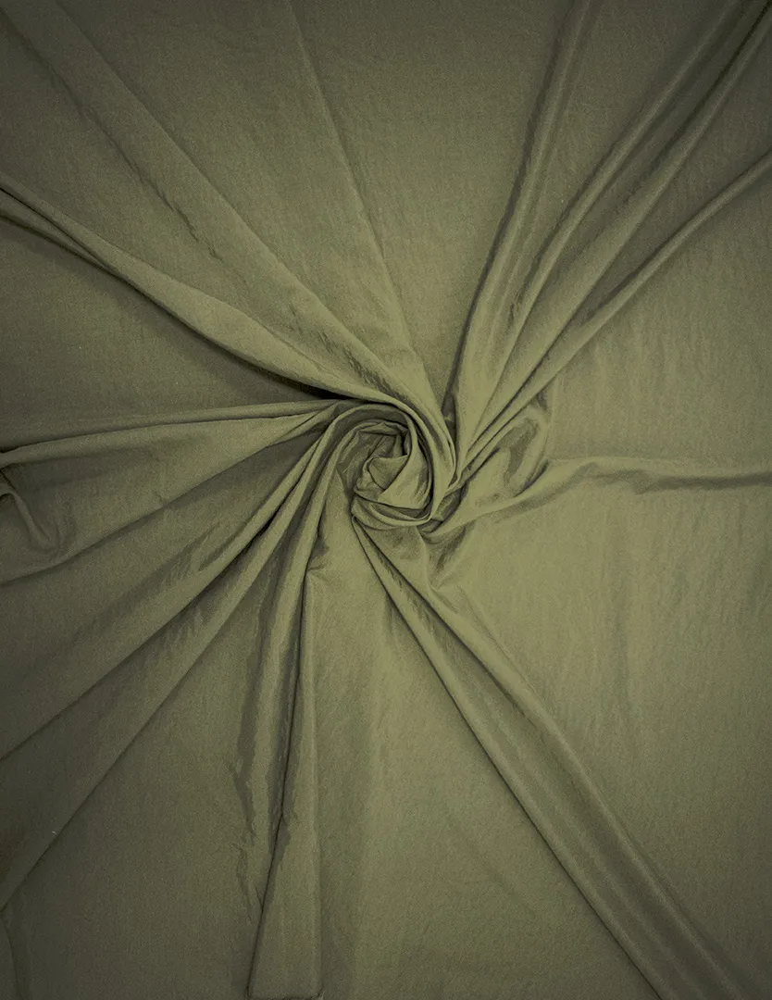
MacTel is a plain-weave fabric made of 100% polyamide 6.6 (nylon), 108 g/m² and 1.50 m wide. Suited for shorts, Bermuda shorts and jackets — available in 29 colors.
★ Best seller
Code 11150
MacTel
- Composition
- Weight
- 108 g/m²
- Width
- 1.50 m
- Weave
- Plain weave
- Applications
- ShortsBermuda shortsJackets
Exclusive technology
This fabric is MacWear™
MacWear™ is the new performance standard for Macias fabrics and leaves the factory built into this article — more than a finish, it's a technical evolution in resistance, comfort and durability.
View the technologies page →Available colors 29
-
 0001
White
Pantone 11-4001 TCX
0001
White
Pantone 11-4001 TCX
-
 0372
Off White
Pantone 11-0608 TCX
0372
Off White
Pantone 11-0608 TCX
-
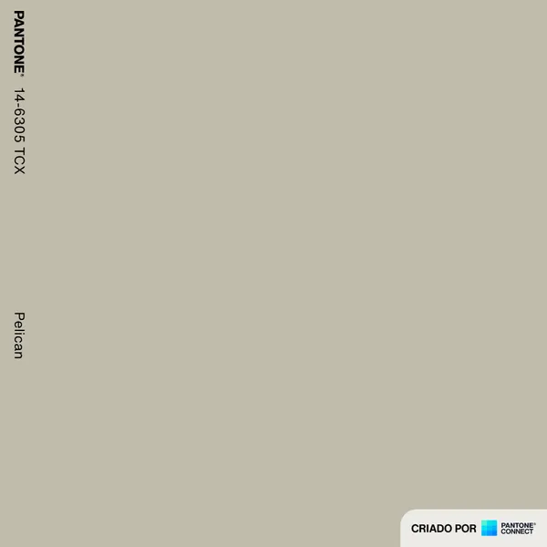
0199 Dark Sand Pantone 14-6305 TCX -
 1204
Military Green
Pantone 19-0419 TCX
1204
Military Green
Pantone 19-0419 TCX
-
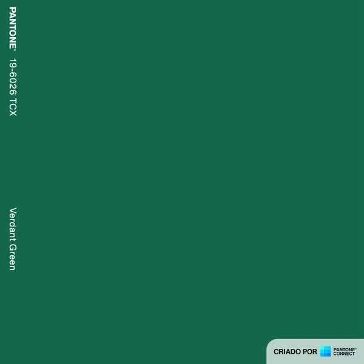
1913 Evergreen Pantone 19-6026 TCX -
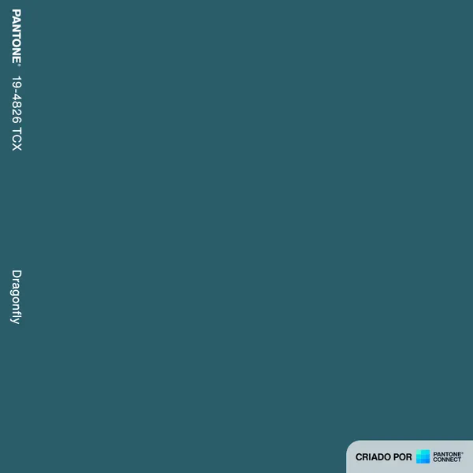
2011 Petrol Blue Pantone 19-4826 TCX -
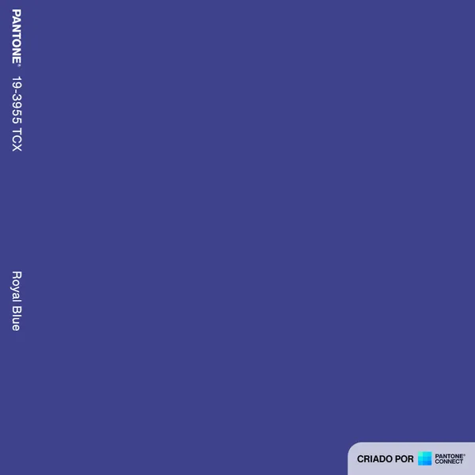
2014 Royal Blue Pantone 19-3955 TCX -
 2065
Nautical Blue
Pantone 19-4056 TCX
2065
Nautical Blue
Pantone 19-4056 TCX
-
 2073
Dark Royal Blue
Pantone 19-3864 TCX
2073
Dark Royal Blue
Pantone 19-3864 TCX
-
 2261
Navy Blue
Pantone 19-4024 TCX
2261
Navy Blue
Pantone 19-4024 TCX
-
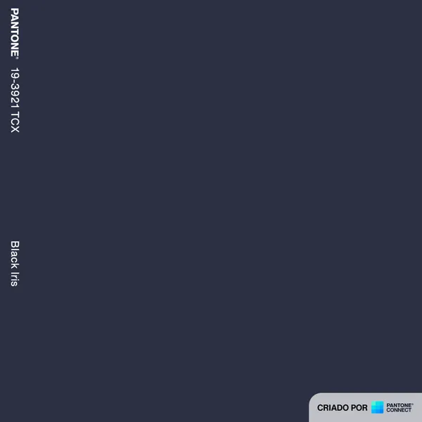
2500 Dark Navy Blue Pantone 19-3921 TCX -
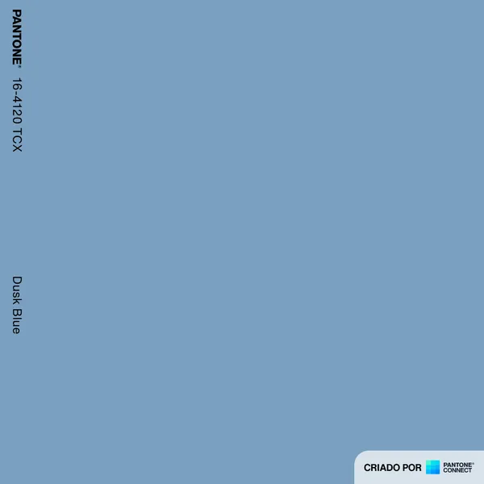
2847 Grayish Blue Pantone 16-4120 TCX -
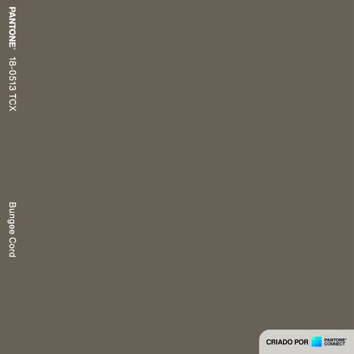
3345 Mouse Gray Pantone 18-0513 TCX -
 3351
Medium Greenish Gray
Pantone 17-6009 TCX
3351
Medium Greenish Gray
Pantone 17-6009 TCX
-
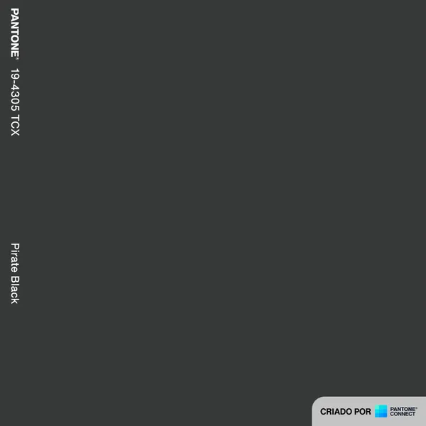
3375 Pirate Gray Pantone 19-4305 TCX -
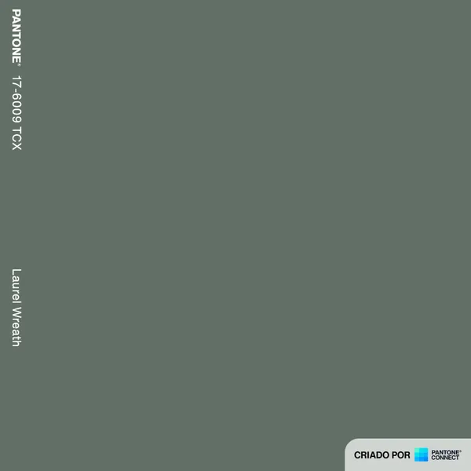
3624 Light Gray Pantone 17-6009 TCX -
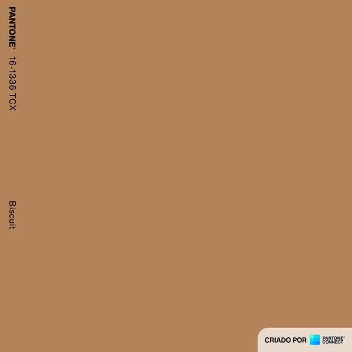
4004 Biscuit Ochre Pantone 16-1336 TCX -
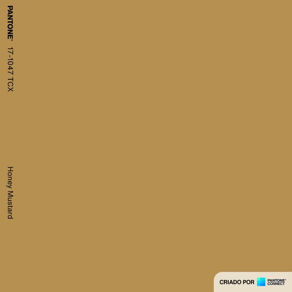
4007 Caramel Pantone 17-1047 TCX -
 4174
Brown
Pantone 19-0915 TCX
4174
Brown
Pantone 19-0915 TCX
-
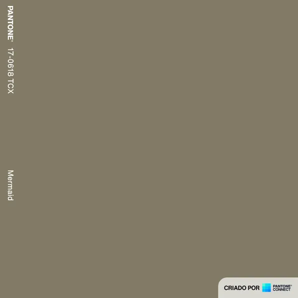
4244 Dark Khaki Pantone 19-0618 TCX -
 4676
Medium Khaki
Pantone 18-0521 TCX
4676
Medium Khaki
Pantone 18-0521 TCX
-
 5384
Lipstick Red
Pantone 19-1764 TCX
5384
Lipstick Red
Pantone 19-1764 TCX
-
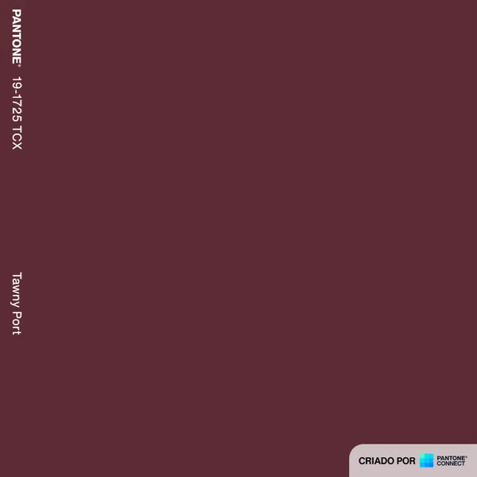
5581 Wine Pantone 19-1725 TCX -
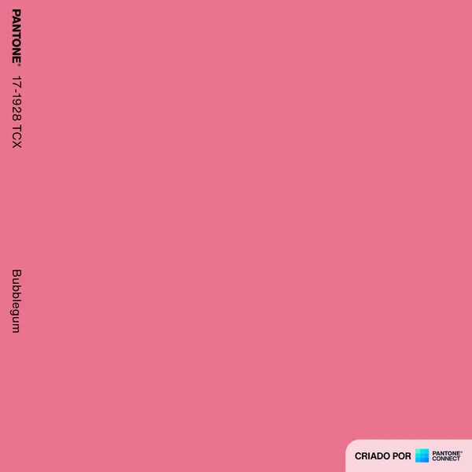
5810 Bubblegum Pink Pantone 17-1928 TCX -
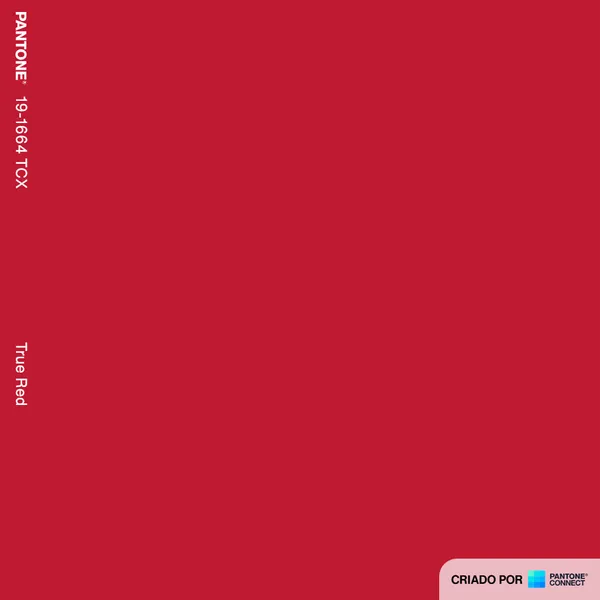
5978 Red Pantone 19-1664 TCX -
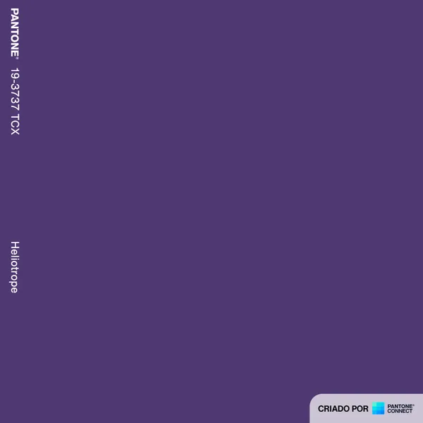
6267 Purple Pantone 19-3737 TCX -
7007
Fluorescent Orange
-
 7131
Orange
Pantone 17-1452 TCX
7131
Orange
Pantone 17-1452 TCX
-
 9999
Black
Pantone 19-4007 TCX
9999
Black
Pantone 19-4007 TCX
Care instructions
- Wash separately; in the first washes the garment may release residual dye.
- For garments combining colors, we recommend hand washing.
- Do not mix light and colored garments when washing.
- Avoid rubbing hard when hand washing the garment.
- Do not mix lightweight garments with heavyweight ones.
- Rinse the garments thoroughly with plenty of water.
- Wash at room temperature.
- Do not soak.
- Do not wring the fabric.


{kind=link}